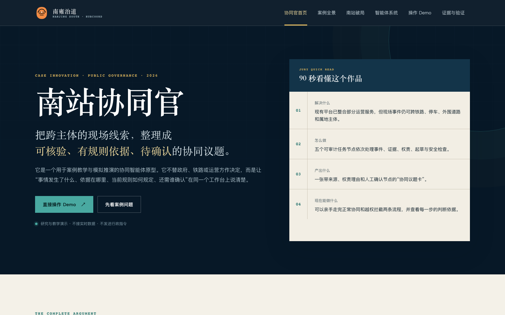
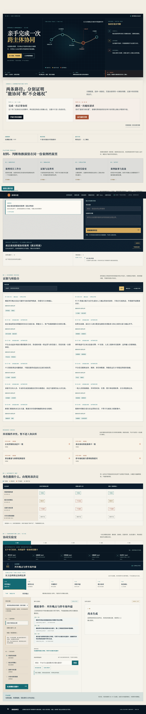
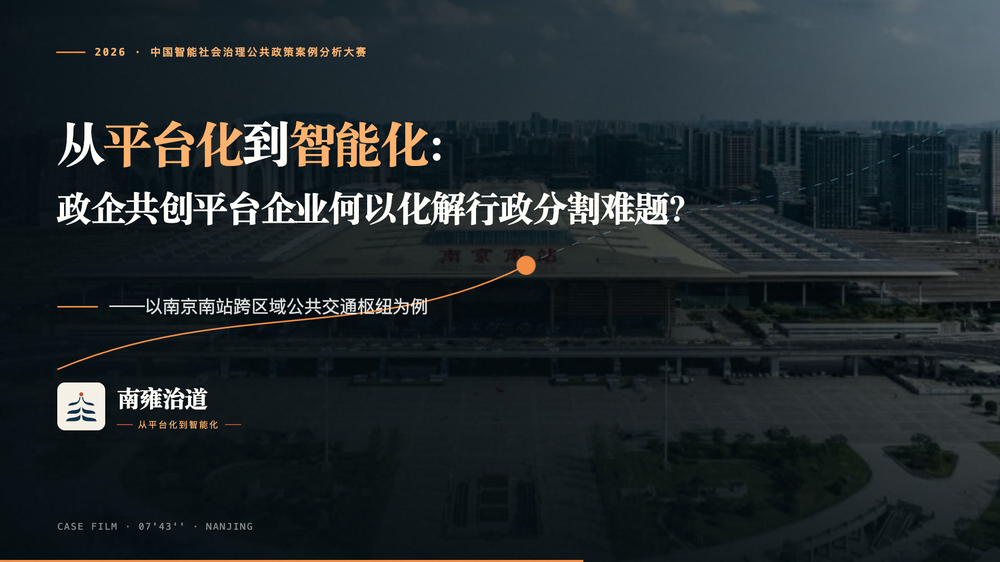

T+00
运行变化
模拟列车晚点或集中到达，客流压力首先在铁路与出站空间出现。
来源：教学模拟输入南京南站地处苏皖交界，长期存在“九龙治水”式的行政分割。本作品集以同一案例、同一主场景组织六种表达形式：视频让人看见困境，网页把边界摆出来，智能体让人换位追问，3D 沙盘解释空间与机制的后果。
一趟晚点列车如何让压力从铁路侧传导到站区协同接口。SC-01 是教学推演场景，以访谈中已确认的机制关系为基础，用清晰标注的模拟输入呈现问题如何跨过治理边界。
模拟列车晚点或集中到达，客流压力首先在铁路与出站空间出现。
来源：教学模拟输入旅客向停车场、网约车上客区和周边接驳空间扩散。
节点：出站口 / 停车区车辆排队与人流叠加，场内引导开始影响外围道路秩序。
节点：红线转换点运营方可组织红线内服务，却不能独自调控外围道路或取得全部运行信息。
规则：权责地图协同官生成证据包与协同议题卡，请实际主体确认信息、动作和时限。
输出：待确认事项比较“各自处理”与“人工确认后协同”的路径，记录仍未解决的制度接口。
输出：教学复盘下面每一件都指向仓库中的真实文件。视频采用网页友好的预览版；原始高清成片留在本地归档，不进入 Git 历史。




源码目录保留可继续开发的工程，静态可打开的版本优先留在项目根目录，便于评审直接预览。
规则、证据卡、评测数据与离线 Demo，含 contracts / data / eval / prompts 四类资产。
03-可运行源码/南站协同官-离线演示与源码/轻量静态网页项目，案例正文与分析统一使用成品站点中的案例故事和案例分析页面。
03-可运行源码/南站工作台网页-hubcoord-case/保留 dist 与源码，排除 node_modules；可通过 npm 重新构建。
03-可运行源码/南京南站3D仿真-station-sim-3d/视频时间线、制作数据与旁白文本，渲染输出目录 out/ 不进仓库。
03-可运行源码/案例视频Remotion工程-case-video/“南雍治道”创新作品提交材料，含说明表、导览视频与离线演示源码。
01-原始创新作品提交包/Logo、海报、设计系统与视觉输出，统一深蓝 / 金 / 玉三色编辑部风格。
05-设计与视觉资产/这些文件帮助团队理解材料的来源、后续放置规则，以及上线时哪些内容需要替换为网页预览版。
自动生成的全量文件索引，适合查找具体源码、页面、视频和说明。
后续项目放置规则、GitHub Pages 发布方式和大视频处理边界。
每个新项目建议保留的 README、源码、静态交付页、验收记录和数据边界。

旅客看到的是连续的一条出站路；组织面对的却是一段段被铁路、运营、道路和属地边界切开的责任链。
视频、网页、智能体构成主交付；3D 沙盘与看板是增强项，服从主线进度。
不虚构效果数据，不冒充官方平台，不把模型建议写成行政指令。